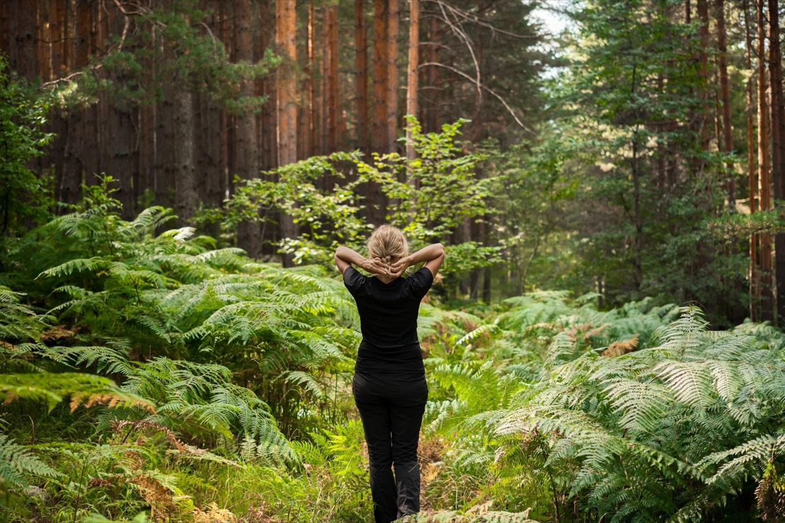

Percorso +4 · Tematico
Sentiero del respiro
Benvenuti sul Sentiero del Respiro, un luogo dove il tempo rallenta e la natura diventa maestra di benessere.
A PiediCon il Tuo Cane
A Piedi
- Durata
- Mezza Giornata
- Lunghezza
- 6 Km
- Difficoltà
- Facile
- Dislivello
- 356 Mt
Traccia (6,5 km)Partenza e arrivo
Porta il percorso con te
Scarica la traccia per il navigatore o per un'app come Komoot, OsmAnd o Wikiloc.
Sentieri e cammini attraversati
- Sentieri CAI
- nr. 38 - nr. 00
- Cammini
- Sentiero Italia SOFT 14
Descrizione del percorso
Leggi il racconto di Orme del Mugello
Il percorso, di breve durata e facilmente percorribile da tutti, parte dal Passo del Giogo (882 m), luogo dove si è fatta la storia. Durante la Seconda Guerra Mondiale, il Passo del Giogo fu un punto strategico della Linea Gotica, la principale linea difensiva tedesca in Italia. Nel settembre del 1944, le forze alleate, in particolare il II Corpo d'Armata statunitense, lanciarono un'offensiva per sfondare questa linea difensiva. Dopo cinque giorni di intensi combattimenti, riuscirono a conquistare le alture di Monticelli e Monte Altuzzo, poste a sud del passo e difese dalla 4ª Divisione paracadutisti della Luftwaffe. Oggi, il Passo del Giogo è un luogo di memoria storica. Nei pressi del valico si trova la stazione meteorologica di Rifredo Mugello, gestita dal servizio meteorologico dell'Aeronautica Militare, importante per lo studio del clima della zona.
Dal Passo si raggiunge, dopo una breve salita, il Monte Altuzzo (925 m) che viene ricordato ogni anno per la battaglia che si tenne tra gli Alleati e le forze tedesche. Si ritorna sui propri passi, e si inizia il percorso ad anello.
Meditare nel bosco aiuta a rilassarsi profondamente e ad alleviare lo stress grazie al contatto con la natura. L’aria fresca e i suoni della foresta favoriscono la concentrazione e stimolano la creatività. Il respiro si armonizza con il ritmo naturale, promuovendo equilibrio e benessere. Il verde degli alberi e la luce che filtra tra le foglie donano calma alla mente e contribuiscono a ridurre la pressione sanguigna. Questa pratica permette di ritrovare se stessi, aumentando la consapevolezza e la pace interiore.
Si raggiunge ben presto un punto panoramico. Un belvedere regala benefici per la salute e il benessere, aiutando a riconnettersi con ritmi più lenti e naturali.
Osservare il paesaggio allevia lo stress e tranquillizza la mente, favorendo un profondo rilassamento. Lasciar vagare lo sguardo verso l’orizzonte amplia la visione interiore, stimolando creatività e lucidità mentale. Respirare aria fresca in quota migliora l’ossigenazione e dona energia. Il silenzio e la bellezza della natura facilitano la meditazione e accrescono la consapevolezza. Prendersi una pausa dalla frenesia quotidiana aiuta a ritrovare equilibrio e armonia con se stessi. Un incrocio nel bosco è un luogo suggestivo dove i sentieri si incontrano, offrendo un’esperienza immersiva nella natura. Ogni percorso svela tonalità uniche, dai colori delle foglie ai giochi di luce che filtrano tra i rami. I profumi del muschio, della resina e della terra bagnata risvegliano i sensi. Il canto degli uccelli, il sussurro del vento e il suono dei passi sulle foglie formano una sinfonia rilassante. Gli alberi, con le loro forme mutevoli, narrano storie di stagioni e del tempo che scorre. Sostare in questo punto significa ritrovare il contatto con la natura, ascoltare il proprio respiro e scegliere la propria strada.
La camminata meditativa è un esercizio di consapevolezza in cui ogni passo viene fatto con intenzione, armonizzando il respiro con il movimento per promuovere il rilassamento e la piena attenzione al momento presente.
Si chiude l’anello tornando al Passo del Giogo.
Il Forest Bathing
Il Forest Bathing, o bagno di foresta, è una pratica di immersione nella natura nata in Giappone con il nome di Shinrin-Yoku. Consiste nel camminare lentamente in un bosco, utilizzando i cinque sensi per connettersi con l’ambiente circostante. Respirare l’aria ricca di oli essenziali rilasciati dagli alberi riduce lo stress, abbassa la pressione sanguigna e rafforza il sistema immunitario. Il contatto con la natura favorisce il rilassamento mentale, stimola la creatività e migliora l’umore. Senza sforzo fisico intenso, il Forest Bathing aiuta a ritrovare equilibrio e benessere, offrendo un momento di pace e armonia con se stessi e l’ambiente.
Dormire, mangiare e prodotti lungo il percorso
Strutture ricettive (1)
Il nome della struttura porta al suo sito web; "contatti" apre la scheda con telefono e mail sul portale turistico Mugello Toscana (per chi non ha un sito c'è solo quella). Le aziende portano ai loro siti. Sono tutte segnate anche sulla mappa.
Percorso, traccia e testi di Orme del Mugello, pubblicati con il loro permesso.